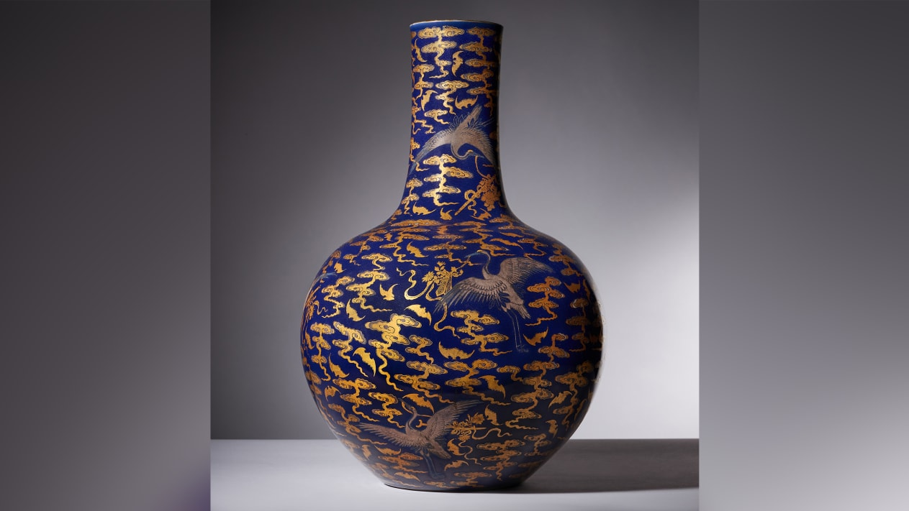
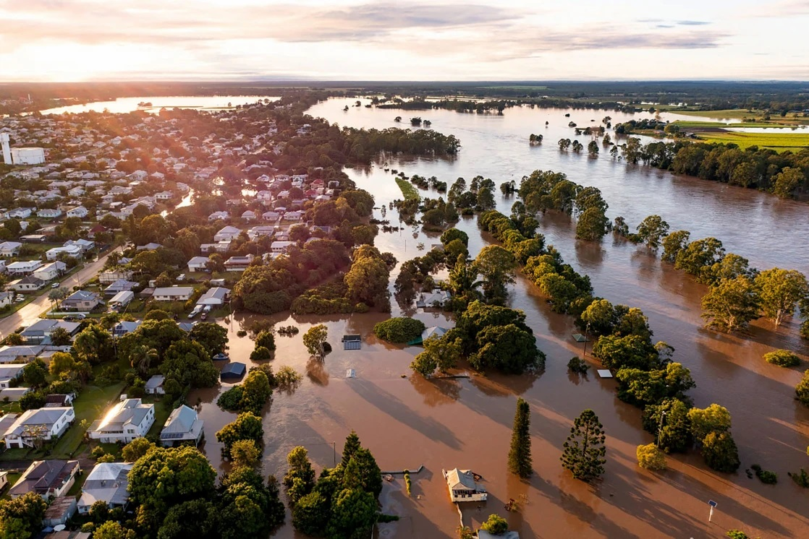

May 23, 2022 - 12:38
WEF: Ukraine president calls for sanctions and reconstruction offers
Детальніше
Monday May 23 2022
Clearview AI fined in UK for illegally storing facial images
Детальніше
18th May 2022
Rare 18th-century Chinese vase kept in kitchen sells for $1.8 million at auction
Детальніше
May 23, 2022
Australia's 'climate election' shows shifting priority for voters
Детальніше
May 23, 2022
China is alarmed by the Quad. But its threats are driving the group closer together
Детальніше